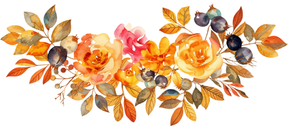

The Wedding of
Guswik & Fitri
I Gusti Made Dwi Jayantara & Ni Komang Fitri Dharma
“Atas anugerah Ida Sang Hyang Widhi Wasa, kami dipersatukan dalam ikatan suci Wiwaha. Semoga perjalanan ini senantiasa dipenuhi cinta kasih, keharmonisan, kesetiaan, dan kebijaksanaan, menuju keluarga yang bahagia lahir dan batin.”
Pawiwahan
Bride & Groom
“Atas Asung Kerta Wara Nugraha Ida Sang Hyang Widhi Wasa, dengan penuh rasa syukur kami melangsungkan Upacara Pawiwahan sebagai awal perjalanan hidup bersama. Semoga Ida Sang Hyang Widhi Wasa senantiasa melimpahkan kerahayuan, keharmonisan, dan kebahagiaan kepada keluarga yang kami bina.”


Ni Komang Fitri
Putri Bungsu dari Pasangan:
Bapak I Komang Darma, S.P
& Ibu Ni Ketut Sumitri

I Gusti Made Dwi Jayantara
Putra Kedua dari Pasangan:
Bapak I Gusti Made Dwipa
& Ibu Ni Made Arsaniati
Agenda Pernikahan
Pawiwahan & Resepsi
Upacara Pawiwahan
Resepsi Pernikahan
Bertempat di:
Community Hall of Sembung Gede Kelod Village
Balai Banjar Sembung Gede Kelod,
Desa Sembung Gede, Kec. Kerambitan, Kab. Tabanan, Bali
Dress Code
Merupakan suatu kehormatan bagi kami apabila Bapak/Ibu/Saudara/i berkenan mengenakan busana bernuansa:
Virtual & Social
Keterlibatan Digital
Live Streaming
Jika berhalangan hadir, pernikahan kami dapat disaksikan secara langsung melalui tautan YouTube di bawah ini:
Saksikan di YouTubeFilter Instagram
Mari bantu kami mengabadikan momen spesial ini dengan menggunakan filter Instagram khusus pernikahan kami di Instagram Stories Anda:
Save FilterOur Moments
Wedding Gallery
Untaian rasa dan senyuman dalam bingkai kebersamaan kami menuju gerbang pelaminan.

Perjalanan Rasa
Our Love Story
It Started with a Simple Hello
Sebuah sapaan sederhana menjadi awal kisah yang membawa kami hingga hari ini.
Distance Became Part of Our Story
Kota yang berbeda dan rindu yang disampaikan lewat layar mengajarkan kami bahwa jarak tak pernah menghentikan kami untuk saling memilih.
From “When Will We Meet?” to “When Will We Get Married?”
Setelah begitu banyak pertemuan singkat dan perpisahan di bandara, kami memilih untuk berhenti menghitung jarak dan mulai merencanakan masa depan bersama.
No More Goodbyes at the Airport
Kini, bukan lagi tentang dua pulau dan jadwal penerbangan, melainkan tentang satu rumah, satu kehidupan, dan perjalanan yang akan kami lalui bersama.
“Our long-distance story is finally coming home.”
Tanda Kasih
Wedding Gift
Kehadiran dan doa restu Anda adalah hadiah terindah bagi kami. Namun jika Anda bermaksud memberikan tanda kasih berupa kado atau hadiah digital, silakan ketuk tombol di bawah ini:
No. Rekening Transfer
Atas Nama: Komang Fitri
Kado Fisik
Penerima: Komang Fitri / Cinta Aura
Desa Lambarese, Kec. Burau, Kab. Luwu Timur,
Sulawesi Selatan
Buku Tamu
Wedding Wishes & RSVP
Mohon konfirmasikan kehadiran dan sampaikan doa restu Anda untuk kedua mempelai.
Matur Suksma
Kami Yang Berbahagia
Guswik & Fitri
#WeddingFitriGuswik
Merupakan suatu kehormatan dan kebahagiaan bagi kami apabila Bapak/Ibu/Saudara/i berkenan hadir untuk memberikan doa restu kepada kami.
Atas kehadiran dan doa restunya, kami ucapkan terima kasih yang setulus-tulusnya.
Om Shanti Shanti Shanti Om